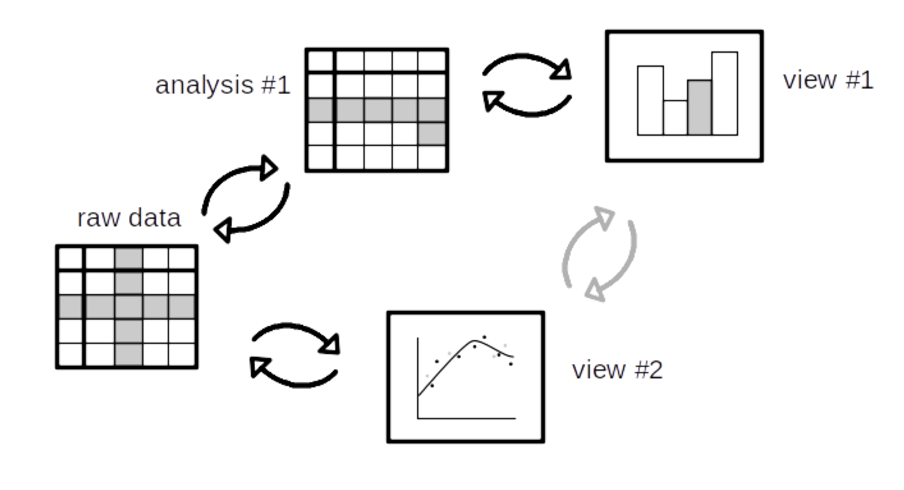

Digital technology is transforming the way scientists generate, evaluate and communicate knowledge. Fluid is a functional programming language which makes computational artefacts such as charts, figures and statistical analyses more transparent and explorable. A Fluid chart is written as a purely functional view, but the generated charts provide affordances that allow a reader to discover how views relate to each other, and to the underlying code and datasets. The current prototype allows us to
The left chart show total renewable energy output for bio, hydro, solar and wind (colour-coded) for China, USA and Germany in 2015. The chart on the right shows China's renewables output over time for the same four energy types, with the black line plotting the total. Dependency-wise, these two charts are "cognate": they have common data dependencies. Now consider the data for China in the left chart. How does this relate to what we can see in the other chart? Well, the chart on the left is a
Fluid lets us explore these relationships. For example, you can express interest in the y-coordinate of a rectangle by moving your mouse towards its bottom edge. Doing so will pop up a toolship showing the value of that attribute, and as well as any attributes in the other chart that depend on the same underlying data. Visualisation libraries such as Bokeh and spatial analytics applications like GeoDa provide limited support for this kind of linking, but usually only for specific predefined visualisations, or with a certain amount of programmer effort. Fluid takes a more foundational approach, through a dependency-tracking runtime that makes linking automatic and pervasive.
Why is this a programming languages problem? Well, to implement linking in a domain-general way ultimately requires a new kind of programming language semantics – not a new kind of language, but rather a new style of semantics that relates parts of programs to parts of their outputs in a fine-grained way. Fluid builds on such an approach, called Galois slicing, which we are adapting to the linking problem for data visualisation. The approach involves a bidirectional dynamic analysis which (minimally) relates parts of the code and data to the parts of visualisations and other outputs that they contribute to. By round-tripping this analysis via the raw data (black arrows below), it is possible to link selections in one view to selections in another in a precise way (grey arrows):

A 5-month pilot project to prototype this idea was supported by The Alan Turing Institute from January to May 2019, through their AI for Science and Government programme. The project was developed and led by Roly Perera and Tomas Petricek.